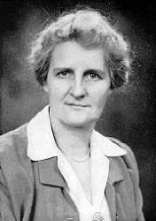
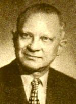

|
|
【恩愛救贖主】 |
|
1 Up Calv'ry's mountain one dreadful morn Chorus: 2 "Father, forgive them!" thus did He pray, 3 O how I love Him, Savior and Friend,
|
各各他山上，悲苦之晨， |
|
https://hymnary.org/hymn/BH2008/page/363
|
|
|
|
|


Blessed Redeemer The Joslin Grove Choral Society https://youtu.be/ah0n_WN70-8 -
https://youtu.be/ntqSlCr7Shs
| Text: | Blessed Redeemer |
| Author: | Avis B. Christiansen |
| Tune: | REDEEMER |
| Composer: | Harry Dixon Loes |
| Short Name: | Avis B. Christiansen |
| Full Name: | Christiansen, Avis B., 1895-1985 |
| Birth Year: | 1895 |
| Death Year: | 1985 |
Avis Marguerite Burgeson was born in 1895

and lived in Chicago all her life. She attended the Moody Church, pastored for many years by Dr. Harry Ironside. In 1917, Avis Burgeson married Ernest Christiansen who later became a vice president of Moody Bible Institute. She was a modest and retiring woman, and sometimes used pen names: Avis Burgesson, Christian B. Anson and Constance B. Reid. She began writing poems in childhood, and before her death in 1985 had written thousands of them. She died in 1985.
Tune Information
| Title: | REDEEMER (Loes) |
| Composer: | Harry Dixon Loes (1920) |
| Meter: | 9.9.9.9 with refrain |
| Incipit: | 55553 54324 44426 |
| Key: | D Major |
| Copyright: | Public Domain |
| Short Name: | Harry Dixon Loes |
| Full Name: | Loes, Harry Dixon, 1895-1965 |
| Birth Year: | 1895 |
| Death Year: | 1965 |
Pseudonyms:
Deal
Bartells

Born Harold Loes, the American gospel song writer took the middle name Dixon in honour of A. C. Dixon, the pastor of Moody Church at the time. Harry Dixon Loes studied at Moody Bible Institute, and after extensive training in music he served a number of churches with a ministry of music. From 1939 until his retirement he was a member of the music faculty of Moody Bible Institute. He wrote the lyrics for 1,500 gospel songs, and composed 3,000 tunes.
One day in 1915, Paul Rader preached a sermon in Moody Church, in Chicago. His theme was, “All that I want is in Jesus.” In the congregation was young Harry Dixon Loes, then a senior at Moody Bible Institute, where he would eventually teach. Inspired by Dr. Rader’s message, Harry Loes wrote the words and music for a song he called "All Things in Jesus." It was first sung by the church’s youth group.
Words: Avis Marguerite Burgeson Christiansen (b. Oct.
11, 1895; d. Jan. 14, 1985)
Music: Harold Dixon Loes (b. Oct. 20, 1892; d. Feb. 9,
1965)
Links:
Wordwise Hymns (Avis
Christiansen)
The Cyber
Hymnal
Note: Harry Dixon Lowes took the middle name “Dixon” in honour of Rev. Amzi Clarence Dixon, pastor of Moody Church in Chicago (1906-1911), a man well known for his defence of the fundamentals of the faith. Mr. Loes was a music teacher at Moody Bible Institute (1939-1965). He wrote many hymns, sometimes providing the words as well as the music.
As for the present hymn, this is one of those cases when the tune came before the text. It was a sermon he heard entitled “Blessed Redeemer” that inspired Loes to write a melody that he thought captured the mood of the message. Then, he sent the tune, and the suggested title, to longtime friend, Avis Christiansen, who was eventually to become one of the most significant gospel song writers of the twentieth century. Mrs. Christiansen wrote the lyrics, and the song was published in 1920.
In the Greek language of the New Testament, the word “blessed” is eulogeo, from which we get our English word “eulogy” (something we often hear at funerals). Eulogeo means to speak well of, to praise, or to celebrate with praises. Used of the Lord Jesus Christ, it indicates that He is worthy of all praise and glory, worthy to be honoured, both for who He is and what He has done.
There are two special occasions when this word was applied to Christ.
1) Of His Incarnation
One came before He was even born. By a miracle of the Holy Spirit, a
young virgin named Mary was prepared to give birth to the incarnated Son
of God (Lk. 1:31, 35; cf. Matt. 1:19-23).
When her cousin Elizabeth greeted her, she was given prophetic insight into what had happened to Mary and exclaimed, “Blessed [eulogeo] is the fruit of your womb!” (Lk. 1:42). Later, when Paul described some of the privileges God had granted to the nation of Israel, one was that they were the people “from whom, according to the flesh, Christ came, who is over all, the eternally blessed God” (Rom. 9:5).
The first instance of Christ being called blessed, worthy of praise,
came near the beginning of His earthly life. A second came near the end.
2) Of His Messiahship
The Gospels record that in the days before He was crucified, Christ
entered into the city of Jerusalem, presenting Himself to the people as
their Messiah-King, in a manner that fulfilled Old Testament prophecy
(Matt. 21:1-11; cf. Zech. 9:9).
On that occasion, many of the people cried out, “Hosanna to the Son of David [a messianic title]! ‘Blessed [eulogeo] is He who comes in the name of the LORD!’ Hosanna in the highest!” (Matt. 21:9), and “Blessed is the King who comes in the name of the LORD!” (Lk. 19:38).
A few days later, He was crucified.
Though he was rejected at His first coming, the Lord Jesus Christ will return in triumph, and reign over the earth. God the Father will place Him on the throne (Ps. 2:6) as “the blessed and only Potentate, the King of kings and Lord of lords” (I Tim. 6:15; cf. Rev. 19:11-16).
To the eyes of His enemies, and of those who rejected Him, when the Lord Jesus walked to the place of execution, He was anything but blessed. He was scorned and ridiculed. But we who have been saved through faith in His shed blood bless Him with sincere joy.
“To you who believe, He is precious; but to those who are disobedient [He is], ‘the stone which the builders rejected’” (I Pet. 2:7).
In the words of Avis Christiansen concerning our wonderful Saviour (CH-3), “How can my praises ever find end!”
CH-1) Up Calvary’s mountain, one dreadful morn,
Walked Christ my Saviour, weary and worn;
Facing for sinners death on the cross,
That He might save them from endless loss.
Blessèd Redeemer! Precious Redeemer!
Seems now I see Him on Calvary’s tree;
Wounded and bleeding, for sinners pleading,
Blind and unheeding–dying for me!
CH-3) O how I love Him, Saviour and Friend,
How can my praises ever find end!
Through years unnumbered on heaven’s shore,
My tongue shall praise Him forevermore.
Questions:
1) Christians are to “be to the praise of His glory” (Eph. 1:12). What
are some ways that we can praise the Lord, with words, and without them?
2) What would characterize the life of a person who is not being to the praise of His glory?
Links:
Wordwise Hymns (Avis
Christiansen)
The Cyber
Hymnal
https://wordwisehymns.com/2012/11/09/blessed-redeemer/
Harry Dixon Loes 1892–1965
Harry Dixon Loes (October 20, 1892 – February 9, 1965) was an American composer and teacher, best known for his composition of the children's gospel song "This Little Light of Mine". Loes was a musical director in several churches and an evangelist for more than a dozen years.
Life[edit]
Harry Loes was born in Kalamazoo[1][2] as the son of Fred Loes and Louise Novak Loes.[3] He was the musical director in several churches. Subsequently Loes became involved in evangelistic work for more than a dozen years.[1] Afterwards he became a music teacher at the Moody Bible Institute in 1939,[4] where he worked until his death.[1] He adopted the middle name of "Dixon" as an homage to the former pastor of the Moody Church, Dr. A. C. Dixon.[3] In 1924 Loes married Garnet Leonard.[3]
Loes was first inspired by Paul Rader during a sermon at the Moody church about “All that I want is in Jesus” in 1915. After hearing the sermon, Loes wrote the lyrics of a hymn called "All Things in Jesus" which was later sung by the youth group of the church. During his lifetime, Loes crafted the words to over 1,500 hymns, and created the music for some 3,000 others.[4] He died in Chicago on February 9, 1965 at the age of 72.[2]
This Little Light of Mine[edit]
"This Little Light" was inspired by a sermon at Moody's church[5] "which reflected the subject of Christ's atonement",[This quote needs a citation] on lyrics by Loes' friend Avis Burgeson Christiansen. She was already known for her hymns in her native Chicago, writing both lyrics and music. Christiansen provided words and arrangements for Loes' compositions.[5] It was first published in 1920 in the hymnal Songs of Redemption.[1]
"This Little Light of Mine" was sung as part of the protests during the 2015 Baltimore protests.[6] The song was also covered by contemporary artist Bruce Springsteen in Dublin.[7]
Other hymns[edit]
Loes also wrote the music to "All Things in Jesus", "Blessed Redemer", "Love Found a Way", and "Shine for Jesus Where You Are".[8] In addition to his musical contributions, Loes also wrote the lyrics to "All Things in Jesus", and "Shine for Jesus Where You Are" and "At the Judgment Bar".[3]
References[edit]
- ^ a b c d Osbeck, Kenneth W. (1985). 101 More Hymn Stories. Kregel. p. 52. ISBN 9780825434204.
- ^ a b "Harry Dixon Loes 1892–1965". NetHymnal. Retrieved 28 April 2015.
- ^ a b c d "Harry Dixon Loes". Hymntime. hymntime.com. Retrieved 2 May 2015.
- ^ a b Plantinga, Harry. "Harry Dixon Loes". Hymnary.org. Retrieved 28 April 2015.
- ^ a b Collins, Ace (2009). Stories Behind the Traditions and Songs of Easter. Zondervan. pp. 86–88. ISBN 9780310542261.
- ^ Scarano, Ross (29 April 2015). "On the Ground in Baltimore: "What Did This Solve?"". complex.com. Retrieved 2 May 2015.
- ^ "This Little Light of Mine" on YouTube, Bruce Springsteen
- ^ "Harry Dixon Loes 1892–1965". Retrieved 9 May 2015.
https://en.wikipedia.org/wiki/Harry_Dixon_Loes
Today in 1895 – Avis Christiansen Born
Avis Marguerite Burgeson was a lifelong Chicago resident who attended the great
Moody Church, pastored for many years by Dr. Harry Ironside. In 1917, Avis
Burgeson married Ernest Christiansen who became a vice president of Moody Bible
Institute. A modest and retiring woman, Mrs. Christiansen sometimes used pen
names–Avis Burgesson, Christian B. Anson and Constance B. Ried. She began
writing poems in childhood, and before her death in 1985 had written thousands
of them–many of which were turned into insightful and singable gospel songs.
Here are a few that she has given us.
Believe on the Lord Jesus Christ
Blessed Calvary
Blessed Redeemer
Come, Come, Ye Saints*
Fill All My Vision
How Can It Be?
It Is Glory Just to Walk with Him
Jesus Has Lifted Me
Love Found a Way
Only One Life to Offer
*This is a much revised version of a Mormon hymn, rendering it more in keeping
with orthodox Christianity. (See Today in 1846.)
One Sunday evening at Moody Church, Avis Christiansen heard a message by Paul
Rader on John 3:16. He emphasized the love of God that provided for our
salvation in the cross of Christ, and said, “Love found a way.” Musician Harry
Dixon Loes was struck by the words, and quickly jotted down a few phrases. He
gave them to his friend Avis, and the ideas later became her song,
Wonderful love that rescued me, sunk deep in sin,
Guilty and vile as I could be—no hope within;
When every ray of light had fled, O glorious day!
Raising my soul from out the dead, love found a way.
Love found a way, to redeem my soul,
Love found a way, that could make me whole.
Love sent my Lord to the cross of shame,
Love found a way, O praise His holy Name!
Here is a rendition of the above song on an electronic keyboard. I’m not partial
to the repetitive emphasis on the 6/8 rhythm, (Oom-pa-pa, Oom-pa-pa). The song
could have been played more smoothly, but it is well done otherwise.
Space won’t permit a discussion of many of Christiansen’s fine songs, but
consider Blessed Calvary for a moment. The words are Avis’s. The tune was
supplied by Lance Brenton Latham. Latham was an accomplished concert pianist. (I
was privileged to hear him when he was in his eighties, and his playing even
then was amazing!) He was also a pastor. But his most recognized accomplishment
was his founding of a children’s club that eventually became the worldwide Awana
Youth Association. (For more on the songs of Mrs. Christiansen, see Today in
1985.) For more on Lance Latham, see the third item under Today in 1685.) The
Christiansen and Latham hymn says:
I look at the cross upon Calvary,
And O what a wonder divine!
To think of the wealth it holds for me–
The riches of heaven are mine.
Blessed Calvary, precious Calvary!
‘Neath thy shadow I’ll ever abide;
Blessed Calvary, precious Calvary!
‘Twas there Jesus suffered and died.
The cross is my hope for eternity–
No merit have I of my own;
The shed blood of Christ my only plea–
My trust is in Jesus alone.
(2) How Blest Was That Life (Data Missing)
Both the author of the words and the composer of the tune are unknown for this
little song. (You can hear the tune played on the Cyber Hymnal.)
How Blest Was That Life reflects on how wonderful it would have been to sit at
Jesus’ feet and listen to His teaching, during His days here upon earth. But it
reminds us as well that we serve a living Saviour, who continues to be
accessible to us, and whom we will one day see.
How blest was that life once lived upon earth,
The life of the Saviour of men!
What joy was their part who learned at His feet,
Who loved and who worshipped Him then!
I know that He liveth, Redeemer and Friend,
To bless and to comfort our way;
I know the glad song of the heavenly throng—
He liveth, He liveth today!
The Friend of our need, the Hope of the world,
Abides with us still as of old;
When wandering far in sorrow and sin,
He leadeth us home to the fold.
Thou art not afar, in regions unknown:
Our faith reacheth up unto Thee;
And still, through the mists of ages long past,
The Saviour of sinners doth see.